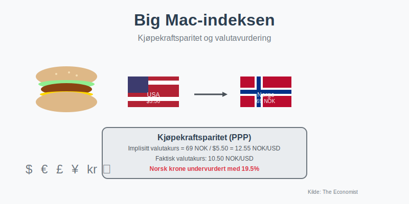
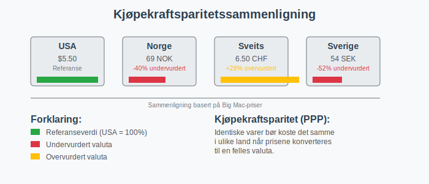
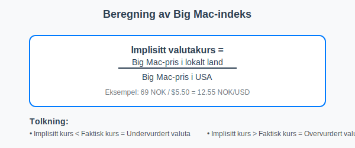
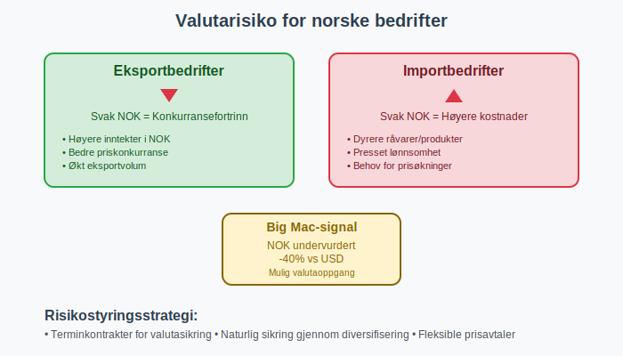
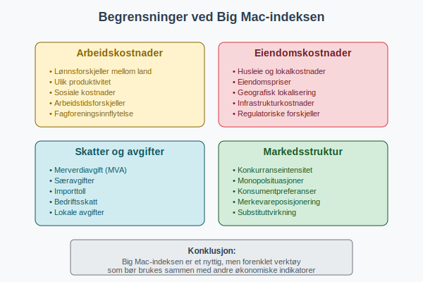
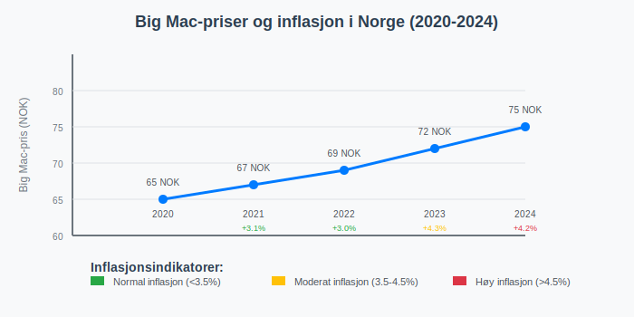
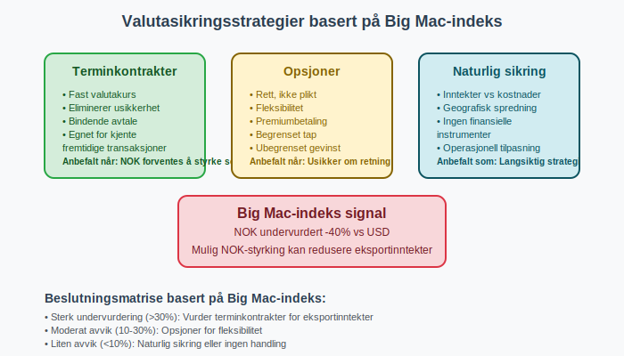

Big Mac-indeksen er et uformelt økonomisk verktøy som brukes til å sammenligne kjøpekraft mellom ulike land. Indeksen, utviklet av det britiske magasinet The Economist i 1986, baserer seg på prisen på en Big Mac hamburger fra McDonald’s som en enkel måte å måle om valutaer er under- eller overvurdert.
Hva er Big Mac-indeksen?
Big Mac-indeksen fungerer som en forenklet versjon av kjøpekraftparitetsteorien (PPP). Teorien foreslår at identiske varer bør koste det samme i ulike land når prisene konverteres til en felles valuta.

Hvordan fungerer indeksen?
Big Mac-indeksen sammenligner lokale priser på Big Mac burgere med prisen i USA (som referansepunkt). Beregningen viser om en valuta er:
- Undervurdert - Hvis Big Mac koster mindre enn i USA
- Overvurdert - Hvis Big Mac koster mer enn i USA
- Rettferdig verdsatt - Hvis prisen tilsvarer amerikansk nivå
Beregning av Big Mac-indeksen
Indeksen beregnes ved følgende formel:

Eksempel fra Norge (2024)
| Land | Big Mac-pris | Lokal valuta | Implisitt valutakurs | Faktisk valutakurs | Over/undervurdert |
|---|---|---|---|---|---|
| Norge | 69 NOK | NOK | 6.27 NOK/USD | 10.50 NOK/USD | -40.3% (undervurdert) |
| USA | $5.50 | USD | 1.00 | 1.00 | 0% (referanse) |
| Sveits | 6.50 CHF | CHF | 1.18 CHF/USD | 0.92 CHF/USD | +28.3% (overvurdert) |
| Sverige | 54 SEK | SEK | 4.91 SEK/USD | 10.20 SEK/USD | -51.9% (undervurdert) |
| Danmark | 30 DKK | DKK | 2.73 DKK/USD | 6.85 DKK/USD | -60.1% (undervurdert) |
Tallene er eksempler og kan variere.
Relevans for norske bedrifter
Valutarisiko og prisingstrategi
For norske bedrifter som opererer internasjonalt, gir Big Mac-indeksen innsikt i:
- Valutaeksponering og potensielle gevinster/tap
- Prisingstrategi i ulike markeder
- Kostnadskontroll ved internasjonale anskaffelser

Regnskapsmessige konsekvenser
Big Mac-indeksen kan påvirke regnskapsføring på flere måter:
1. Valutaomregning
- Omregning av utenlandske transaksjoner til norske kroner
- Avstemming av valutaposisjoner
- Vurdering av valutasikringsstrategier
2. Verdsettelse av investeringer
- Investering i utenlandske markeder
- Vurdering av oppkjøpskandidater i andre land
- Goodwill ved internasjonale transaksjoner
Begrensninger ved Big Mac-indeksen
Strukturelle forskjeller
Big Mac-indeksen har flere begrensninger som påvirker nøyaktigheten:

- Arbeidskostnader varierer betydelig mellom land
- Husleie og eiendomspriser påvirker McDonald’s kostnader
- Lokale skatter og avgifter som merverdiavgift
- Regulatoriske forskjeller i ulike markeder
Justert Big Mac-indeks
For å korrigere for inntektsforskjeller, utviklet The Economist en justert versjon som tar hensyn til BNP per capita:
Justert indeks = Rå indeks - (0.5 × ln(BNP per capita lokal / BNP per capita USA))
Praktisk anvendelse i norsk næringsliv
For eksportbedrifter
Norske eksportbedrifter kan bruke Big Mac-indeksen til:
- Markedsvurdering - Identifisere attraktive eksportmarkeder
- Prisoptimalisering - Tilpasse priser til lokal kjøpekraft
- Risikostyring - Forutse valutabevegelser
For importbedrifter
Importbedrifter kan anvende indeksen for:
- Leverandørvurdering i ulike land
- Kostnadsprognose for fremtidige innkjøp
- Budsjettplanlegging
Big Mac-indeksen og inflasjon
Indeksen kan også brukes til å sammenligne inflasjonsnivåer mellom land:

Historisk utvikling i Norge
| År | Big Mac-pris Norge | Årlig prisendring | Kommentar |
|---|---|---|---|
| 2020 | 65 NOK | - | Referanseår |
| 2021 | 67 NOK | +3.1% | Moderat økning |
| 2022 | 69 NOK | +3.0% | Fortsatt økning |
| 2023 | 72 NOK | +4.3% | Inflasjon synlig |
| 2024 | 75 NOK | +4.2% | Høy inflasjon fortsetter |
Alternativer til Big Mac-indeksen
Andre mat-baserte indekser
- Starbucks-indeksen - Basert på kaffe-priser
- iPhone-indeksen - Teknologi-basert sammenligning
- Netflix-indeksen - Abonnementstjenester
Offisielle målinger
- OECD PPP-data - Mer omfattende datagrunnlag
- Verdensbank PPP - Inkluderer flere varer og tjenester
- IMF valutavurderinger - Profesjonelle økonomiske analyser
Regnskapsmessig behandling av valutaeksponering
Sikringsinstrumenter
Basert på Big Mac-indeksen kan bedrifter vurdere:
- Terminkontrakter for valutasikring
- Opsjoner for fleksibel sikring
- Naturlig sikring gjennom diversifisering

Regnskapsføring av sikringsforhold
- Fair value sikring - Markedsverdi endringer
- Kontantstrøm sikring - Fremtidige transaksjoner
- Netto investering sikring - Utenlandske datterselskaper
Anvendelse i finansiell analyse
Nøkkeltall og KPIer
Big Mac-indeksen kan integreres med andre nøkkeltall for å:
- Benchmarke internasjonale operasjoner
- Evaluere markedsinntrenging
- Optimalisere kapitalallokering
Risikoevaluering
| Risikotype | Big Mac-indikator | Handling |
|---|---|---|
| Valutarisiko | >20% avvik fra PPP | Vurder sikring |
| Inflasjonsrisiko | Økende Big Mac-priser | Øk prisfleksibilitet |
| Markedsrisiko | Stor prisspredning | Diversifiser geografisk |
Teknologiske verktøy og Big Mac-data
Digitale kilder
- The Economist - Opprinnelig kilde, oppdateres jevnlig
- OECD Stats - Offisielle PPP-data for sammenligning
- Reuters/Bloomberg - Sanntids valutakurser
Automatisering i regnskap
Moderne ERP-systemer kan integrere Big Mac-data for:
- Automatisk valutaomregning
- Risiko-dashboards
- Prognosemodeller
Sektorspesifikke anvendelser
Detaljhandel
Detaljhandelsbedrifter bruker indeksen til:
- Lokalisering av nye butikker
- Prisingstrategi på tvers av markeder
- Varelager optimalisering
Produksjon og industri
Industriselskaper anvender Big Mac-data for:
- Sourcing-beslutninger - Hvor produsere mest kostnadseffektivt
- Markedsinntrenging - Prioritere markeder med gunstig kjøpekraft
- Investeringsbeslutninger - Fabrikklokalisering
Compliance og regulatoriske hensyn
Norske regnskapsregler
Ved bruk av Big Mac-indeksen må norske selskaper følge:
- Regnskapsloven - Krav til valutaomregning
- God regnskapsskikk - Konsistente metoder
- Norsk regnskapsstandard - Spesifikke retningslinjer
Internasjonale standarder
For konsern med utenlandske datterselskaper:
- IFRS - Konsolideringsregler
- IAS 21 - Valutaomregning spesifikt
- IFRS 9 - Sikringsinstrumenter
Fremtidige utviklingstrender
Digitale valutaer
Med fremveksten av digitale valutaer og kryptovalutaer, kan Big Mac-indeksen utvikles til å inkludere:
- Stabilcoins - Kryptovalutaer knyttet til tradisjonelle valutaer
- Digitale sentralbankvalutaer (CBDC)
- Grenseløse betalingsløsninger
Miljø- og bærekraftshensyn
Fremtidige versjoner kan inkludere:
- Karbonavtrykk - Miljøkostnader ved produksjon
- ESG-faktorer - Sosiale og etiske aspekter
- Lokal bærekraft - Regionale miljøforskjeller
Konklusjon
Big Mac-indeksen er et nyttig verktøy for å forstå valutaforhold og kjøpekraft på tvers av land. For norske bedrifter gir indeksen verdifull innsikt i:
- Markedsmuligheter i ulike land
- Valutarisiko og sikringsstrategier
- Prisingsoptimalisering for internasjonale markeder
- Investeringsbeslutninger
Selv om indeksen har begrensninger, fungerer den som et enkelt og tilgjengelig verktøy for å forstå komplekse økonomiske sammenhenger som påvirker moderne forretningsdrift.
For bedrifter som ønsker å ekspandere internasjonalt eller optimalisere sin valutastrategi, bør Big Mac-indeksen brukes sammen med andre økonomiske indikatorer og professional rådgivning fra regnskapsførere og finansielle rådgivere.